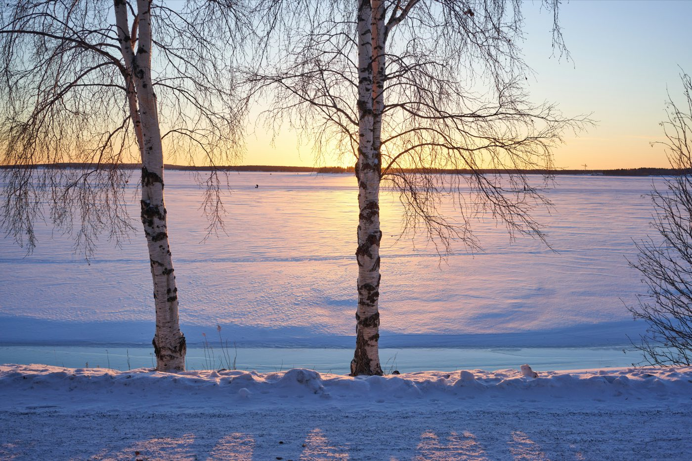

Eine öffentliche Eisroute auf dem gefrorenen Bottnischen Meerbusen, entlang dem Hafen, der Küste und dem winterlichen Schärengarten.
Wenn die Eisbedingungen es zulassen, unterhält die Gemeinde Luleå eine öffentliche Natureisroute auf dem gefrorenen Bottnischen Meerbusen. Hier läufst du selbstständig Schlittschuh entlang dem Hafen, der Küste und dem winterlichen Schärengarten, ganz in deinem eigenen Tempo.
Unter optimalen Bedingungen ist die Route etwa 10 Kilometer lang. Es ist keine abgesperrte Wettkampfbahn: Die Route wird auch von Wanderern, Langläufern und Menschen auf einem traditionellen schwedischen Kicksled genutzt.
Länge, Qualität und Freigabe können sich täglich ändern durch Temperatur, Schneefall, Wind und den Zustand des Natureises. Du betrittst ausschließlich offiziell freigegebenes Eis und entscheidest selbst, ob die Bedingungen zu deiner Erfahrung und deinem Niveau passen.